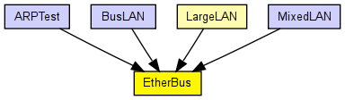

A generic bus model.
The ethg[i] gates represent taps. Messages arriving on a tap travel on the bus on both directions, and copies of it are sent out on every other tap after delays proportional to their distances.
Tap connections should have zero delays and zero data rates!
Messages are not interpreted by the bus model in any way, thus the bus model is not specific to Ethernet in any way. Messages may represent anything, from the beginning of a frame transmission to end (or abortion) of transmission.
The following diagram shows usage relationships between types. Unresolved types are missing from the diagram. Click here to see the full picture.
The following diagram shows inheritance relationships for this type. Unresolved types are missing from the diagram. Click here to see the full picture.
If a module type shows up more than once, that means it has been defined in more than one NED file.
| LargeLAN (compound module) |
Several hosts and an Ethernet hub on a switch. One port of the hub connect to a 10Base2 segment. |
| ARPTest (network) | (no description) |
| BusLAN (network) |
Sample Ethernet LAN: four hosts on a bus. |
| MixedLAN (network) |
Sample Ethernet LAN containing eight hosts, a switch and a bus. |
| Name | Type | Default value | Description |
|---|---|---|---|
| positions | string |
positions of taps on the cable in meters, as a sequence of numbers separated by spaces. If there are too few values, the distance between the last two positions is repeated, or 5 meters is used. |
|
| propagationSpeed | double | 200mps |
signal propagation speed on the bus |
| Name | Value | Description |
|---|---|---|
| node | ||
| labels | node | |
| display | b=200,5,,,,1 |
| Name | Direction | Size | Description |
|---|---|---|---|
| ethg [ ] | inout |
to stations; each one represents a tap |
// // A generic bus model. // // The ethg[i] gates represent taps. Messages arriving on a tap // travel on the bus on both directions, and copies of it are sent out // on every other tap after delays proportional to their distances. // // Tap connections should have zero delays and zero data rates! // // Messages are not interpreted by the bus model in any way, thus the bus // model is not specific to Ethernet in any way. Messages may // represent anything, from the beginning of a frame transmission to // end (or abortion) of transmission. // simple EtherBus { parameters: @node(); @labels(node,ethernet-node); @display("b=200,5,,,,1"); string positions; // positions of taps on the cable in meters, as a sequence // of numbers separated by spaces. If there are too // few values, the distance between the last two positions // is repeated, or 5 meters is used. double propagationSpeed @unit("mps") = default(200mps); // signal propagation speed on the bus gates: inout ethg[] @labels(EtherFrame-conn); // to stations; each one represents a tap }